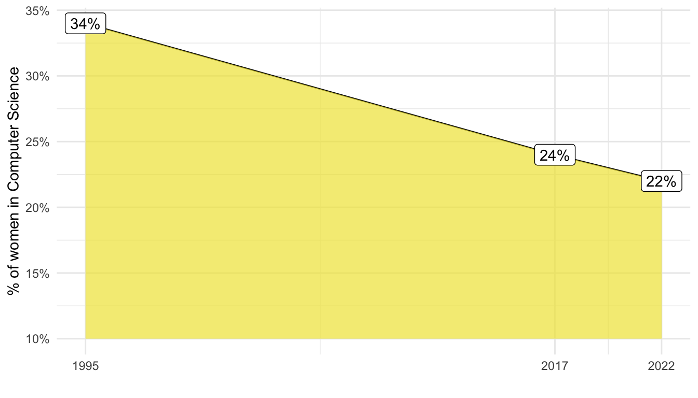

Explorative Datenanalyse
Letzte Änderung am 18. September 2023 um 16:18:55
“Richtiges Auffassen einer Sache und Missverstehen der gleichen Sache schließen einander nicht vollständig aus.” — Franz Kafka, Vor dem Gesetz
In dem vorherigen Kapiteln haben wir uns mit dem Programmieren in R beschäftigt. Wir haben gelernt mit einem Computer durch eine Programmiersprache zu kommunizieren. Jetzt haben wir die Daten in R Eingelesen und im Zweifel noch angepasst. Nun wollen wir uns die Daten einmal angucken. Nicht in dem Sinne, dass wir nur auf die Datentabelle schauen. Sondern wir wollen die Daten visualisieren und damit Zusammenhänge aufdecken. Wir erstellen Abbildungen von den Daten und versuchen so mehr über die Daten zu erfahren. In dem Zusammenhang können wir auch Tabellen erstellen, die uns die Daten zusammenfassen. Das führt uns dann schon näher an die eigentlichen Forschungsfragen, als es die puren Daten tun. Sehen wir Zusammenhänge zwischen verschiedenen Variablen bzw. Spalten? Dazu führen wir eine explorative Datenanalyse durch (abk. EDA). Über die explorative Datenanalyse wollen wir uns nun in den folgenden Kapitel einmal Gedanken machen.
Ups, das hier ist mir aber zu wild!
Der folgende Abschnitt ist nicht relevant für eine Klausur. Ich möchte hier aber einmal auf die Geschichte der Computational statistics eingehen. Wie du schon aus dem Kapitel zum Forschungsprozess weißt, ist die Geschichte einer Wissenschaft manchmal unerlässlich um aktuelle Entwicklungen zu verstehen. Also keine Angst, bitte überspringt den Abschnitt, wenn du nur für die Klausur lernst.

Computer vor Computern
Was war eigentlich am Anfang? Also bevor es eigentlich Computer gab? Die Antwort ist relativ einfach. Bevor es Computer gab, gab es Computer. Wir müssen dafür den Begriff Computer aber einmal in seiner Wortbedeutung übersetzen. Computer bedeutet ‘jemand der rechnet (eng. to compute)’. Damit kommen wir der Lösung nach dem Davor schon etwas näher. Vor den in silico Computern, gab es die in vivo Computer – nämlich menschliche Computer. Diese Menschen, zum überwiegenden Teil Frauen, haben die Rechenschritte durchgeführt, wie auch das folgende Zitat zeigt.
“A good number of the computers are former high school teachers. Their ages may average near 21, but there are a surprising number nearer 30 years old. There is no restriction because of marriage; in fact, some of the computers are wives of the engineers of various classifications here at National Advisory Committee for Aeronautics (NACA)” — When the Computer Wore a Skirt: Langley’s Computers, 1935–1970
Dies führt uns nun in eine Zeit, als Computer Menschen waren.. In der Abbildung 1 siehst du die menschlichen Computer des Jet Propulsion Laboratory (JPL) der NASA. In dem Jet Propulsion Laboratory wurden die Raketenantriebe des US-Raumfahrtprogramms entwickelt. Hierbei muss du wissen, dass die Computer von den eigentlichen Entscheidungsgremien und Besprechungen getrennt waren.
In der Abbildung 2 ist ein typischer Pool an Computern dargestellt. Die menschlichen Computer sind dabei in Reihe geschaltet und führen jeweils pro Tisch und Frau eine Rechenoperation aus. Neben den eigentlichen Computern gibt es noch Hilfskräfte und meist männlich Vorgesetzte, die die Ergebnisse in Empfang genommen haben.
Wenn dich mehr zu der Geschichte des Computers interessiert, dann besuche doch gerne die Webseite des Computer History Museum – Birth of the Computer. Wie immer liefere ich hier nur einen kleinen Ausschnitt, der uns helfen soll, unsere tätige Forschung richtig einzuordnen. Denn ohne einen Computer und die Kommunikation über eine Programmiersprache oder Oberfläche ist ein Arbeiten heutzutage nicht mehr denkbar.
“By the time World War II broke out, many scientists and industrialists in the U.S. were measuring computing power not in megahertz or teraflops, but in ‘kilo-girls’. And computing time was measured, in turn, in ‘girl hours’ (with complex calculations requiring a certain amount of ‘kilo-girl-hours’).” — Computing Power Used to Be Measured in ‘Kilo-Girls’
Nun kommen wir aber auch gleich zum Punkt, den dieses Zitat erzwingt. Faktisch spricht man immer von menschlich Computern. Das ist aber natürlich Unsinn, denn es waren ja nicht zu gleichen Teilen Männer und Frauen, die die menschlichen Computer repräsentierten. Es waren fast ausschließlich nur Frauen, die als Computer gedient haben. Deshalb ist das Programmieren auch eine zutiefst weibliche Tätigkeit, wie Grace Hopper (1906–1992) anmerkt.
“Es ist wie ein Abendessen zu planen. Man muss vorausplanen und alles so terminieren, dass es fertig ist, wenn man es braucht. Das geht nur mit Geduld und dem Blick für Details. Frauen sind Naturtalente im Programmieren.” — Grace Hopper
Hier muss ich zuerst nochmal eine Einschränkung machen, denn unter Programmieren verstand man in den Anfängen der Computerwissenschaften zwischen den 30’zigern und den 50’zigern etwas anderes als heute. Programmentwürfe und damit auch Rechenabfolgen mussten mühsam und Schritt für Schritt in Maschinencode übersetzt werden. Diese Arbeit wurde als Bürotätigkeit mit niedrigem gesellschaftlichen Status angesehen. Dennoch kamen geradeaus diesem Bereich die größten Innovationen in den Computerwissenschaften. Schauen wir uns nun einmal vier sehr berühmte Programmierinnen an ohne die wir heute nicht so mit Rechnern sprechen könnten, wie wir es jetzt tun. Daneben gibt es noch mehr berühmte Frauen in den Computerwissenschaften, aber wir schauen uns die folgende, subjektive Auswahl in der Abbildung 3 einmal an.


Beginnen wir unsere Reise mit Ada Lovelace (1815–1852) der ersten Erstellerin von Computerprogrammen. Wir sehen sie einmal auf einem Gemälde in der Abbildung 3 (a). Ada Lovelace war eine britische Mathematikerin und Gesellschaftsdame, was ihr natürlich die Zeit gab, sich mit Mathematik und den damaligen Rechenautomaten zu beschäftigen. Zu dieser Zeit waren die Rechenautomaten eher mit Webstühlen und Lochkartensteuerung vergleichbar, anstatt mit modernen Rechenmaschinen. Durch die Verwendung von Lochkarten konnten sogar komplexere Muster programmiert werden. In Lovelaces Aufzeichnungen, die auch als “Lovelace Notes” bekannt sind, finden sich eine Reihe von Konzepten, die ihrer Zeit weit voraus waren und den Stand der Forschung um 1840 übertrafen.
Ein bemerkenswertes Beispiel ist Lovelaces konkretes Programm für die Maschine, das die Berechnung von Bernoulli-Zahlen demonstrierte. Ihre Erkenntnis, dass diese Maschine mehr als nur Zahlen verarbeiten könnte, war bahnbrechend. Bedauerlicherweise wurde diese Erkenntnis zu ihrer Lebzeit nicht gebührend anerkannt. Obwohl ihre Beiträge zur Rechnerarchitektur und den Grundlagen der Programmierung bis zu ihrer Wiederentdeckung in den 1980er Jahren weitgehend in Vergessenheit gerieten, spielten ihre Standpunkte zur künstlichen Intelligenz in erkenntnistheoretischen Debatten bis heute eine bedeutende Rolle.
Darüber hinaus erkannte Ada Lovelace frühzeitig, dass die Maschine aus einem physischen Teil, nämlich den Kupferrädern und Lochkarten, sowie einem symbolischen Teil bestand, der die automatischen Berechnungen in den Lochkarten codierte. Auf diese Weise nahm sie die fundamentale Unterteilung in Hardware und Software vorweg, ein Konzept, das in der Computerwissenschaft von entscheidender Bedeutung ist.
Als zweites Beispiel betrachten wir Grace Hopper (1906–1992) eine US-amerikanische Informatikerin und Computerpionierin. Wir sehen Grace Hopper einmal in der Abbildung 3 (b). Grace Hoppers Einfluss auf die heutige Zeit ist so simpel, wie bedeutend und herausragend. Jede Programmiersprache, die wir heute kennen basiert auf ihrer Arbeit. Wäre sie nicht gewesen, hätten wir möglicherweise nicht die technischen Möglichkeiten, die heute unsere Leben formen. Grace Hopper kam auf die Idee des Compilers.
“Da stand diese schöne große Maschine, deren einzige Aufgabe es war, Dinge zu kopieren und zu addieren. Warum sollte der Computer das nicht auch können? Deshalb habe ich mich hingesetzt und den ersten Compiler geschrieben. Das war sehr albern. Ich habe mich selbst dabei beobachtet, wie ich ein Programm zusammenstellte und den Computer dazu brachte, das zu tun, was ich tat.” — Grace Hopper
Wir müssen also unseren Code nicht in einem Oktalsystem nahe an dem Maschinencode schreiben. Hopper stellte sich somit eine Zukunft vor, in der Computer nicht mehr nur Werkzeuge für Elite-Wissenschaftler sind, sondern von fast jedem genutzt werden können. Um dies zu erreichen, entwickelte sie den Compiler als ein Computerprogramm, das menschliche Anweisungen in Maschinencode übersetzte, den der Computer interpretieren konnte. Wir können ‘Wörter’ und ‘Grammatik’ nutzen um mit einer Maschine zu kommunizieren. Hoppers Idee und Einsatz war es auch zu Verdanken, dass Software und Hardware voneinander getrennt sind. Wir können auf fast jeder Hardware jede Software aufspielen. Zu Hoppers Zeiten, gab es nur spezifische Software für jeweils eine spezifische Hardware. Mehr über die Mathematik von Grace Hopper ist in Auel (2019) zu finden, wo The Mathematics of Grace Murray Hopper an Beispielen beschrieben und aufgezeigt wird.
Katherine Johnson (1918–2020) ist vielleicht nicht sofort als Name bekannt und auch das Bild in Abbildung 3 (c) wird nicht jedem bekannt vorkommen. Katherine Johnson war eine amerikanische Mathematikerin, dessen Berechnungen der Orbitalmechanik als Mitarbeiterin der NASA entscheidend zum Erfolg des ersten und der folgenden bemannten Raumflüge der USA beitrugen. Sie ist aber auch eine der Hidden Figures – Unerkannte Heldinnen aus dem gleichnamigen Film. Der Film basiert auf dem Buch von Shetterly (2020) udn ist auch als deutsche Vorschau bei Google Books als Leseprobe einzusehen.
“At first she [Katherine Johnson] worked in a pool of women performing math calculations. Katherine has referred to the women in the pool as virtual ‘computers who wore skirts’. Their main job was to read the data from the plane’s black boxes and carry out other precise mathematical tasks. Then one day, Katherine (and a colleague) were temporarily assigned to help the all-male flight research team. Katherine’s knowledge of analytic geometry helped make quick allies of male bosses and colleagues to the extent that, ‘they forgot to return me to the pool’.”
Als die NASA zum ersten Mal elektronische Computer einsetzte, um die Erdumlaufbahn von John Glenn zu berechnen, waren die Berechnungen von Katherine Johnson so bedeutend, dass John Glenn (1921–2016) nicht auf seinen Flug als erster Amerikaner in den Orbit um die Erde starten wollte, wenn Johnson nicht die Zahlen des elektronische Computer überprüft. Dabei muss bedacht werden, dass diese Berechnungen auf keinen Fall trivial waren. Mehr möchte ich dem Film und dem Buch nicht vorweg nehmen. Katherine Johnson hätte es verdient, dass du zumindest den Film einmal anschaust. Der Film ist wirklich gut gemacht.
Als letztes schauen wir uns noch eine weitere Wissenschaftlerin der NASA und der Apollo-Programme näher an. Margaret Hamilton (1936 - heute) ist eine amerikanische Informatikerin und Systemingenieurin. In der Abbildung 3 (d) sehen wir sie neben dem ausgedruckten Code für die Apollo Projekte. Schon Wahnsinn, dass es damals noch ausdruckbar und stapelbar war. Hamilton war Direktorin der Software Engineering Division des MIT Instrumentation Laboratory, das die On-Board-Flugsoftware für das Apollo-Programm der NASA entwickelte. Und damit war Sie die Leiterin der Abteilung, deren Fachbegriff sie selber erschaffen hatte. Hamilton erfand nämlich den Begriff ‘Software-Engineering’ und gab damit einer ganzen wissenschaftliche Disziplin ein zu Hause.
“Ich begann, den Begriff ‘Software-Engineering’ zu verwenden, um es von Hardware und anderen Arten von Engineering zu unterscheiden, aber jede Art von Engineering als Teil des gesamten Systems-Engineering-Prozesses zu behandeln.” — Margaret Hamilton
Als Hamilton während der frühen Apollo-Missionen begann, den Begriff ‘Software Engineering’ zu verwenden, wurde die Softwareentwicklung im Vergleich zu anderen technischen Disziplinen nicht ernst genommen, noch galt sie als Wissenschaft. Hamilton ging es darum, die Softwareentwicklung als Ingenieursdisziplin zu legitimieren. Mit der Zeit gewann der Begriff ‘Software Engineering’ den gleichen Respekt wie jede andere technische Disziplin. Neben weiteren Zahlreichen Errungenschaften war Hamilton am MIT an der Entwicklung der Grundprinzipien der Computerprogrammierung beteiligt, die den Code für den ersten tragbaren Computer der Welt ermöglichten.
“In the early 1970s, when inexpensive minicomputers first appeared on the market […] a statistician could do more computing in an hour than the old Department of Agriculture statistical lab could have done during the entire year of 1924.” — The Origins of Statistical Computing
Wenn dich mehr zu dem spannenden Thema der menschlichen Computer interessiert dann kann ich dir das Buch “When computers were human” von Grier (2013) sehr empfehlen. Denn es gabe eine Zeit, die ist nicht mal hundert Jahre her, da waren die Computer Menschen und keine Maschinen. Alles was du heute so selbstverständlich hinnimmst, wurde von vielen Frauen in Pionierarbeit erschaffen. Den Frauen waren ja auch die ersten Menschen, die sich mit Computern auskannten. Denn Frauen waren ja selber auch Computer. Nur die Hardware hatte sich geändert.
Und heute?
Wie sieht es denn heute aus? Haben wir dort auch sehr viele Frauen, die sich in der Programmierung vortun? Leider nein. In der Abbildung 4 sehen wir den dramatischen Rückgang an Frauen in der Informatik und den Computerwissenschaften. Eigentlich bin ich ja hier schon zu spät dran mit meiner Lehre der Informatik und Programmierung, der größte Rückgang an Frauen wird schon in den früheren Jahren verursacht als ich junge Frauen unterrichte. Aber dennoch möchte ich hier natürlich dem Trend entgegenwirken. Nichtstun ist ja in so einem Fall auch keine wirkliche Option.
Was sind den die Gründe für das Gap in der Informatik und der Computerwissenschaften?
Auch unterrichte ich weniger Informatik als Computational statistics oder eben aktuell Data Science - die Wisenschaft der Daten. Eigentlich gibt es nur noch Computational statistics, den mal ehrlich, wir nutzen nur dann keinen Computer, wenn wir uns in einer Prüfungssituation befinden. Sonst rechnen wir alle Statistik mit einem Computer. Es macht ja auch keinen Sinn komplexe statistische Modelle händisch lösen zu wollen. So greift auch der Artikel von Wilkinson (2008) die Idee der R Shiny Apps auf - ohne natürlich zu wissen wie die Implementierung einmal heißen wird. Im Jahre 2008 gab es R Shiny Apps ja noch nicht und die Technik war ja auch nocht nicht soweit.
“If there is a single technical theme characterizing the future of statistical computing, it would be smart analytics. Smart an alytics will act as assistants to statisticians and data explorers, automatically generate and fit models, automatically generate visualizations, and search networks for data and summarize results for further analysis.” — Wilkinson (2008)
Admiral Grace Murray Hopper: When Women Were Computers
Tja, und so enden wir hier mit einem fantastischen Zitat von Grace Hopper.
“Humans are allergic to change. They love to say, ‘We’ve always done it this way.’ I try to fight that. That’s why I have a clock on my wall that runs counter-clockwise.” — Grace Hopper
Referenzen
Auel A. 2019. The Mathematics of Grace Murray Hopper. Notices of the American Mathematical Society 66.
Grier DA. 2013. When computers were human. Princeton University Press.
Shetterly M. 2020. Im Kernschatten des Mondes-Die unbekannten Heldinnen der NASA. HarperCollins.
Wilkinson L. 2008. The future of statistical computing. Technometrics 50: 418–435.